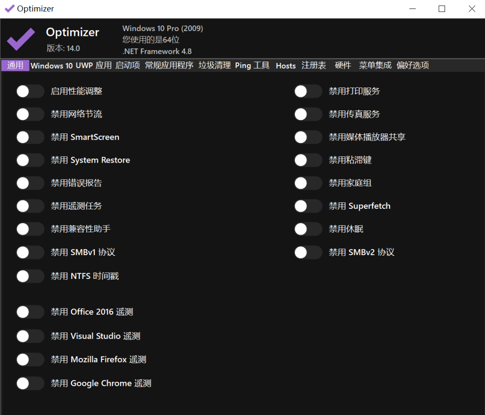
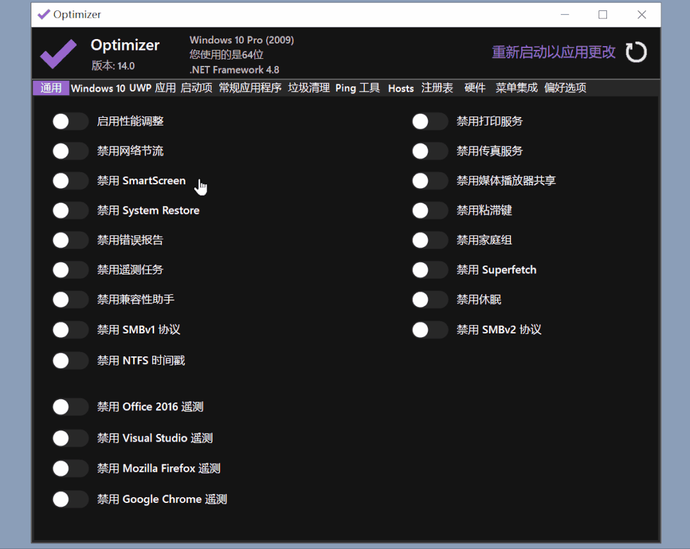

大家随着使用电脑的时间越久，电脑上对于设置的改动就越多，有时候自己都不知道改了哪些设置，导致有些软件运行的时候总是发生错误，缺少权限什么的。
还有就是在重新安装系统之后，每个选项都需要自己去优化。有自己喜欢的系统，系统作者把该优化的都优化了，那就好说。不过喜欢原版系统的朋友就头大了，毕竟微软最近的骚操作越来越多。
今天就来给大家推荐5款专注于系统优化的工具，里面包含了使用电脑期间，用得上的各种系统设置选项调整。
有了这些软件，设置一遍之后，即使不用特定的优化系统，也能用得很舒服了。最后大家一定需要记住的是，手动清理虽然有种奇怪的爽点，但是遇到自己不熟悉的文件和软件时，自己觉得不需要想清理的时候，一定要去搜索一下这个文件是做什么的。
不然清除重要文件就尴尬了，要是清理系统而把系统弄坏或者干扰到本来的工作，是肯定不划算的，这些清理软件赋予大家优先级非常高的清除能力的时候，大家也需要谨慎一点，毕竟不是一键式的“傻瓜式”优化软件，有一句听到耳朵起茧的话怎么说来着：能力越大，责任越大。
软件推荐
1、Optimizer
下载链接： https://wwz.lanzoum.com/ioPKr0d6ptqf
Optimizer是一款Win10和Win11都能用上的优化软件，它可以将你电脑系统上的设置，从系统的旮旯角落里面的选项，全部集中到一个界面，方便管理，Optimizer软件官方说的大白话就是：适合在重装系统之后使用。
Optimizer的本体只有2M多的大小，不用安装，打开即用。第一次使用会让你选择语言，一共支持19种语言。
图示
软件图标
微软在win11里面喜欢加上新闻，还在搜索栏给你整一个喜庆的图标。
系统背后也添加了大量的新服务，甚至还想让你强制使用微软账号绑定系统。

1、下载

2、解压缩，打开软件
3、选择语言，点击确定之后，Optimizer会开始获取你电脑上的设置情况。
这个过程可能会稍微久一点，耐心等待一下即可。
4、软件启动后，就能开始调整系统功能了。
软件现在默认的第一个界面就是禁用你不需要的服务。
5、大家不知道怎么禁用也不用担心。
点击软件上的文字，软件非常贴心的给出了每个功能的具体解释。
6、下面第二个界面，功能其实和第一个界面的功能是一样的。
但作者之所以把它们分离出来，是因为根据系统版本的不同，会多出来一些选项。
大家可以点击下面的图片看看具体多了什么。
可以在这里禁用系统的自动更新、功能更新、拼写检查、小娜和使用数据回传等等。
Win11还能用来调整新功能，还是比较实用的。
下图：上方是Windows10，下方是Windows11。
7、接下来是卸载UWP的软件，这点大家如果使用的是第三方精简的系统，可能会比较少。
像是下面这样，看起来就很清爽。
8、如果没有清理，就是下面这样子，这些软件也并不是全部都没用的，有些是软件需要的组件。大家根据自己的实际需要清理即可，看软件图标就知道是啥了。
9、Optimizer还有一个有趣的功能，可以直接下载电脑上的常用软件。
新装的系统一般缺少.NET环境也可以在这里装，还有Steam和Python一类的软件。
还可以选择软件的系统位数架构，勾选上“下载后直接安装”的按钮，
就不用担心下载到奇奇怪怪的广告套壳软件。
10、另外，还有垃圾清理-像非常精简的CC清理，以及网络连通检测和快速修改Hosts的功能，
还有一个注册表修复的功能，有的朋友装软件太多，各种杂七杂八的捣鼓一通之后，
结果用文件管理器打开文件都很卡或者崩溃，一时间又找不到原因，
就可以使用这个功能来抢救一下。

11、另外，还附带了一个右键管家的功能。
12、你可以自己删除和添加右键列表的功能，可以设置隐藏，同时按Shift和右键才会显示等等。
设置的过程也简单，添加和勾选项目就行。
2、SophiApp
下载链接： https://wwz.lanzoum.com/iEf5E0d6ptrg
SophiApp是和Optimizer同类型的设置调整工具，但是界面看上去更加美观一些，虽然界面美观但是也有一点傲娇，电脑系统版本号太低会跟你说更新后再使用它。
图示
1、下载
2、解压缩，打开文件夹
3、运行文件
4、软件自带中文，需要在设置里面切换，每个功能也有相应的注释。
5、可以更改的选项也不少，你也可以与上面的软件一同使用。
打开软件会自动读取系统当前的设置，不会造成冲突。
更改完成之后，注意重启一下同类型的软件就行。
3、WinaeroTweaker
下载链接： https://wwz.lanzoum.com/iXWCZ0d6pu0f
WinaeroTweaker是一款非常强大的工具，它可以调整几百项系统规则，你甚至可以用它来自定义一套系统界面的皮肤，虽然软件很强大，但由于软件是英文的，所以大家可能知道的不多，今天给大家分享的是汉化的版本。
图示
1、下载
2、解压缩，运行软件
3、打开之后可以看到上面的列表，每个点开又是一堆设置。
4、从Windows的开机声音，滚动栏的大小、窗口字体、到禁用Windows的广告、系统更新、
锁屏、操作中心、自动修复等等，可以说平常你能看到的系统操作，
但是没有软件可以更改的， 都可以在这里找到相关的设置。
5、最离谱的是，这个软件还给了你一个蓝屏的快捷键，好家伙，蓝屏自由是吗？
6、你以为这就结束了？下面还有一个选项，可以让你蓝屏不显示悲伤的笑脸。
这自定义程度，简直没谁了。
7、自定义系统默认的快捷键，只是很小的一个功能。
8、微软不给你用的，藏起来的功能，照样给你挖出来。
9、有的朋友可能喜欢电脑自带的锁屏壁纸画报，那些都是高级摄影师拍出来经过审核的照片，质量比较高，这里可以一键提取，并且直接在桌面生成文件夹，每个功能虽然冷门，但是没有含糊。
10、想知道这个软件是怎么做到这些功能的，点击上面的查看原理按钮，就能看到
每个功能的具体原理，就算看不懂英文，配合浏览器翻译，奇怪的知识也会增加非常多。
这种不止帮你实现功能，还贴心告诉你原理的软件，确实很良心了，收藏一份绝对不亏。
具体功能大家自行体验吧，详细介绍几千字都不够！
4、WPD
下载链接： https://wwz.lanzoum.com/iFDi10d6pu6b
既然说到系统，设置调教完了，自然还要看看微软还给系统安排了哪些小动作，WPD就是帮助你进行Windows系统隐私优化的工具，你可能会想，什么？微软还会想要我的隐私？其实这个隐私和个人隐私有些区别。
它是电脑的详细运行日志，通过定期回传给微软来帮助其统计系统的BUG情况，系统稳定情况等等，虽然不是什么个人隐私，但是它这些服务在后台搞东搞西的还是让人不愉快，用这个工具就能一键扫描关闭掉。
正常情况下，禁用这些数据回传不会有啥副作用，就是你想加入内测版Windows的时候，不打开这些按钮就不给你进而已。
图示
1、下载
2、解压缩，打开文件夹
3、运行软件

4、软件界面
5、具体有多丰富，大家看下面的动图就知道了，每个选项都有解释。
滑到底下一串长长的列表，最后展开一个又是一堆。
6、如果这还不够，你还可以点开第二界面，把微软自带的第三方服务也给带上紧箍咒。

7、实际使用的时候大家不用一个个去选，直接默认的应用即可，可以随时还原。
5、Wise Care 365
下载链接： https://wwz.lanzoum.com/isKqy0d6pu5a
Wise Care 365也算是一款神器，有不少优化系统的功能，第一次使用的话，想要弄明白有多少功能，都需要花上一段时间。
图示
1、下载

2、解压缩，打开文件夹

3、运行文件

4、除了杀毒功能，你都可以把它当做一款电脑管家使用了，配合微软自带的杀毒。
不喜欢装杀毒软件的朋友也能享受其他电脑管家一类的附加功能，甚至更强。

5、软件提供了非常多可以调整的功能，看这界面就知道这个软件覆盖的范围很广。

不过方便的同时也舍弃了一些高级特性，像是右键自定义添加功能，禁用某个具体的组件等等。
不过这样的好处就是方便，点就完事了。